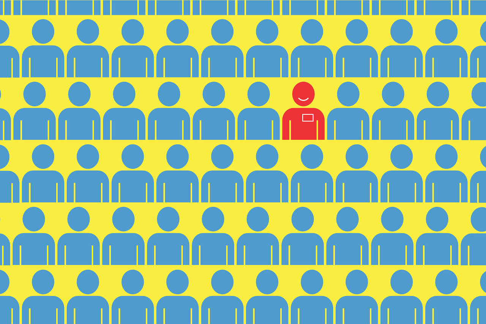

<link rel="stylesheet" href="https://www.w3schools.com/w3css/4/w3.css">
<link rel="stylesheet" href="https://fonts.googleapis.com/css?family=Raleway">
<link rel="stylesheet" href="https://cdnjs.cloudflare.com/ajax/libs/font-awesome/4.7.0/css/font-awesome.min.css">
<style>
  html,
  body,
  h1,
  h2,
  h3,
  h4,
  h5 {
    font-family: "Raleway", sans-serif
  }
</style>

<ion-app>
  <div class="ion-page" id="main-content">
    <ion-header>
      <ion-toolbar>
        <ion-buttons slot="start">
          <ion-menu-button></ion-menu-button>
        </ion-buttons>
        <ion-title>Menu</ion-title>
      </ion-toolbar>
    </ion-header>
    <ion-content>
      <ion-grid style=" background-size: cover; background-image: url(../../assets/img/Fotoram.io.jpg); ">
        <ion-row>
          <ion-col size-xs="11.75" size-md="10" offset-md="1" size-lg="8" offset-lg="2" size-xl="6.5" offset-xl="2.75">
            <div class="slides ion-margin-bottom">
              <ion-slides [options]="slidesOptions">
                <ion-slide>
                  <ion-card button="true" [routerLink]="['/oposiciones']">
                    
                    <ion-card-header>
                      <ion-card-title>Oposiciones</ion-card-title>
                    </ion-card-header>
                    <ion-card-content>
                      <p>Aquí encontrarás un listado con todas las oposiciones dispuestas en el Boletín Oficial del Estado. Seleccionando en la oposicion, podrás ver
                        el historial de modificaciones que pueda tener la oposición, así como un acceso al pdf de la página oficial.
                      </p>
                      <p>Dentro, podrás acceder a un sistema de búsqueda completo en el que podrás filtrar las oposiciones según el criterio que te parezca</p>
                    </ion-card-content>


                  </ion-card>
                </ion-slide>
                <ion-slide>
                  <ion-card button="true" [routerLink]="['/departamentos']">
                    
                    <ion-card-header>
                      <ion-card-title>Departamentos</ion-card-title>
                    </ion-card-header>
                    <ion-card-content>
                      <p>Los departamentos son las entidades que emiten las oposiciones. Aquí podrás encontrar ministerios, comunidades, administraciones, etc.</p>
                      <p>Dentro accederás a una búsqueda por directorio en la que, seleccionando el departamento que desees, podrás ver las especialidades asociadas</p>
                    </ion-card-content>


                  </ion-card>
                </ion-slide>
                <ion-slide>
                  <ion-card button="true" [routerLink]="['/epigrafes']">
                    
                    <ion-card-header>
                      <ion-card-title>Especialidades</ion-card-title>
                    </ion-card-header>
                    <ion-card-content>
                      <p>Las especialidades son el método que tienen los departamentos para diferenciar cada tipo de oposición. </p>
                      <p>Dentro accederás a una búsqueda por directorio en la que, seleccionando la especialidad que desees, podrás ver los departamentos asociados</p>
                    </ion-card-content>

                  </ion-card>
                </ion-slide>

              </ion-slides>
            </div>
          </ion-col>
        </ion-row>
      </ion-grid>

      <div class="container">

        <ion-grid>
          <ion-row>
            <ion-col size-xs="11.75" size-md="10" offset-md="1" size-lg="8" offset-lg="2" size-xl="6.5" offset-xl="2.75">
              <h1>Oposiciones de la última semana</h1>
            </ion-col>
          </ion-row>
          <ion-row>
            
            <ion-col size-xs="11.75" size-md="10" offset-md="1" size-lg="8" offset-lg="2" size-xl="6.5" offset-xl="2.75"
              style="background-color: #e3e8e7;">
              <div scrollY="true" style="max-height: 450px;
              overflow: auto;">
                <ion-list size="2000" *ngFor="let opos of oposiciones">
                  <!--<ion-item [href]="[opos.urlpdf]">-->
                  <!--<ion-item [routerLink]="['/oposiciones',opos.id]">-->
                    <ion-item button="true"
                    (click)="_abrirDetalle(opos.id,opos.titulo,opos.relDepEpi.epigrafe.nombre,opos.relDepEpi.departamento.nombre,opos.urlpdf)">
    
    
                    <div class="w3-row">
                      <div class="w3-col m20 w3-container" *ngIf="opos.fecha.toString().substr(0,10)!=fechaActual">
                        <div *ngIf="opos.estado!='Corrección'">
                          <h4>{{opos.relDepEpi.relDepEpiPK.nombreep}} <span
                              class="w3-opacity w3-medium">{{opos.fecha.toString().substr(0,10)}}</span>
                          </h4>
                          <p>{{opos.relDepEpi.departamento.nombre}} <span class="w3-opacity w3-medium"> {{opos.estado}}
                            </span></p>
                        </div>
                        <div *ngIf="opos.estado=='Corrección'" style="color: cadetblue;">
                          <h4>{{opos.relDepEpi.relDepEpiPK.nombreep}} <span
                              class="w3-opacity w3-medium">{{opos.fecha.toString().substr(0,10)}}</span>
                          </h4>
                          <p>{{opos.relDepEpi.departamento.nombre}}<span class="w3-opacity w3-medium"> {{opos.estado}}
                          </span></p>
                        </div>
    
    
                      </div>
                      <div class="w3-col m20 w3-container" *ngIf="opos.fecha.toString().substr(0,10)==fechaActual">
    
                        <div *ngIf="opos.estado!='Corrección'">
                          <h4>{{opos.relDepEpi.relDepEpiPK.nombreep}} <span
                              class="w3-opacity w3-medium">{{opos.fecha.toString().substr(0,10)}}</span>
                          </h4>
                          <p>{{opos.relDepEpi.departamento.nombre}} <span class="w3-opacity w3-medium"> {{opos.estado}}
                            </span></p>
                        </div>
                        <div *ngIf="opos.estado=='Corrección'" style="color: cadetblue;">
                          <h4>{{opos.relDepEpi.relDepEpiPK.nombreep}} <span
                              class="w3-opacity w3-medium">{{opos.fecha.toString().substr(0,10)}}</span>
                          </h4>
                          <p>{{opos.relDepEpi.departamento.nombre}}<span class="w3-opacity w3-medium"> {{opos.estado}}
                          </span></p>
                        </div>
    
                      </div>
                    </div>
                  </ion-item>
                </ion-list>
                
              </div>
            </ion-col>
          </ion-row>
        </ion-grid>

      </div>

    </ion-content>
    
  </div>

</ion-app>